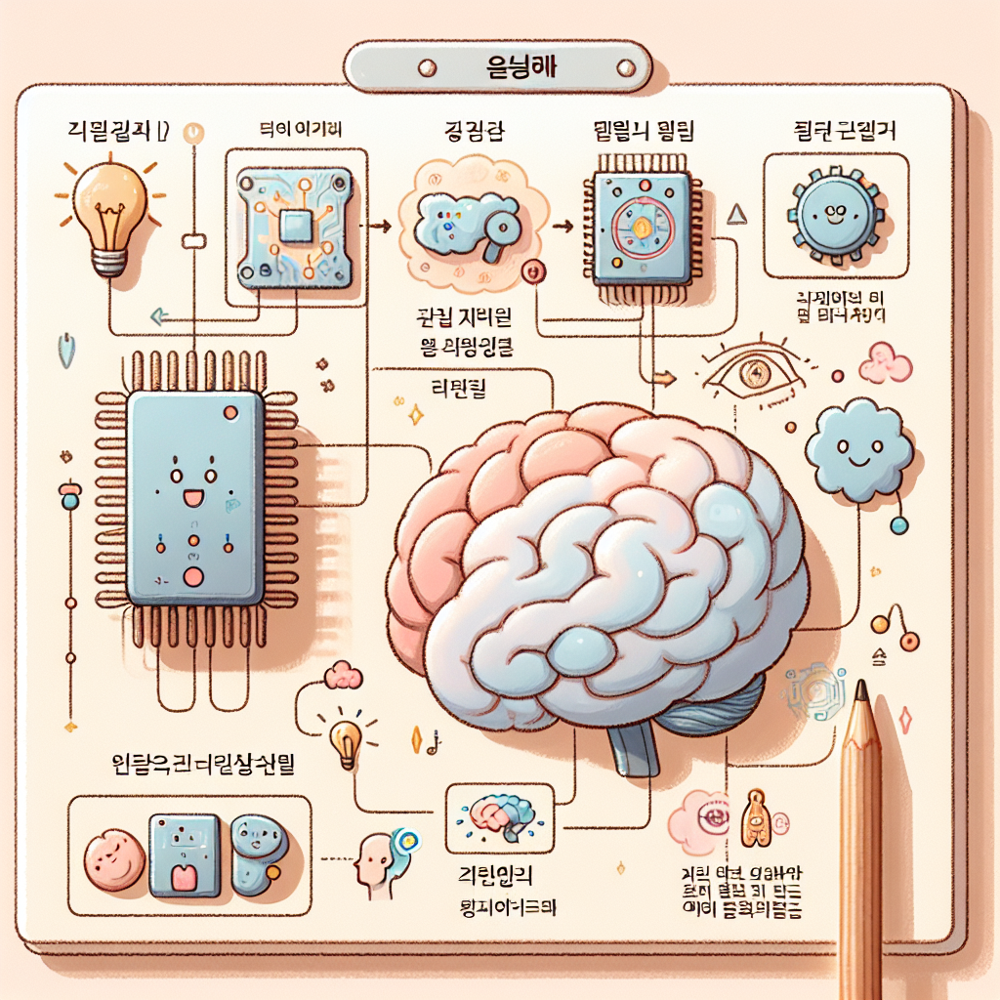
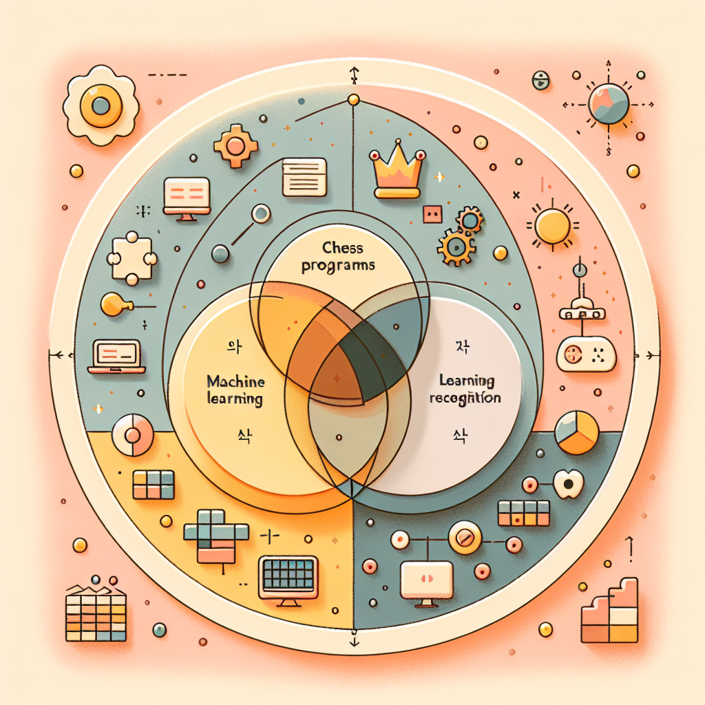

1장. 인공지능이란 무엇인가¶
들어가며¶
"우리는 이미 인공지능과 함께 살고 있습니다. 다만 그것을 인공지능이라고 부르지 않을 뿐입니다." — 래리 테슬러 (Larry Tesler, 컴퓨터 과학자)
오늘 아침 여러분은 무엇을 했나요? 스마트폰 잠금을 얼굴 인식으로 해제했나요? 유튜브에서 추천 영상을 클릭했나요? 혹은 네이버에 무언가를 검색했나요?
사실 이 모든 순간에 인공지능(AI) 이 함께하고 있었습니다. 우리가 의식하지 못하는 사이에도 AI는 조용히, 그러나 강력하게 우리의 일상을 바꾸고 있습니다.
이번 장에서는 "인공지능이 도대체 무엇인가?"라는 가장 근본적인 질문에서 출발합니다. AI의 정의부터 역사, 그리고 머신러닝·딥러닝·자연어처리 같은 핵심 개념까지 차근차근 함께 알아봅시다.
📋 학습 목표¶
[!NOTE] 이 챕터를 마치면 여러분은 다음을 할 수 있습니다.
- 🎯 인공지능(AI)의 정의를 자신의 언어로 설명할 수 있다.
- 🎯 AI의 역사적 발전 과정을 주요 사건 중심으로 설명할 수 있다.
- 🎯 머신러닝(ML)과 딥러닝(DL)의 개념과 차이를 구분할 수 있다.
- 🎯 자연어처리(NLP)의 개념을 이해하고 실생활 사례를 찾아낼 수 있다.
- 🎯 일상생활 속 AI 활용 사례를 스스로 탐색하고 설명할 수 있다.
🔥 도입 활동 — 나는 AI를 얼마나 알고 있을까?¶
[!TIP] 활동 1: AI 하루 체험 기록하기 (5분)
아래 빈칸에 오늘 하루 사용한 것들 중 AI가 적용되었다고 생각하는 것을 적어보세요.
시간 활동 AI가 적용됐을까? 아침 예) 스마트폰 잠금 해제 ✅ 얼굴 인식 AI 오전 점심 오후 저녁 ✏️ 작성 후 옆 친구와 비교해보고, 가장 흥미로운 사례를 발표해 봅시다!
이처럼 AI는 이미 우리 생활 깊숙이 들어와 있습니다. 그렇다면 AI는 정확히 무엇을 의미하는 걸까요?
1. 인공지능의 정의¶
1.1 인공지능이란 무엇인가?¶
인공지능(Artificial Intelligence, AI) 이란 인간의 지적 능력 — 학습, 추론, 문제 해결, 언어 이해, 시각 인식 등 — 을 컴퓨터 시스템이 모방하거나 수행할 수 있도록 만든 기술입니다.
쉽게 말하면, "컴퓨터가 사람처럼 생각하고 행동하게 만드는 기술" 입니다.
| 구분 | 인간 | 인공지능 |
|---|---|---|
| 학습 방식 | 경험과 교육 | 데이터 학습 |
| 판단 기준 | 직관과 논리 | 패턴 인식과 알고리즘 |
| 장점 | 창의성, 감정, 맥락 이해 | 속도, 정확성, 반복 처리 |
| 한계 | 피로, 망각, 감정적 편향 | 창의성 부족, 데이터 의존성 |

1.2 AI의 3가지 유형¶
AI는 그 능력 범위에 따라 크게 3가지로 나눌 수 있습니다.
[!WARNING] 흔한 오해 주의! 현재 우리가 사용하는 챗GPT, 이미지 생성 AI, 추천 알고리즘 등은 모두 약한 AI(Narrow AI) 입니다. 영화에서처럼 스스로 의식을 갖고 반란을 일으키는 AI는 아직 현실에 존재하지 않습니다. AI에 대한 공상과학적 상상과 실제 기술을 구분하는 것이 중요합니다!
2. 인공지능의 역사¶
2.1 AI의 탄생부터 현재까지¶
AI의 역사는 단순히 기술의 역사가 아닙니다. 인류가 "기계도 생각할 수 있을까?"라는 철학적 질문에 답을 찾아온 여정입니다.
2.2 AI 겨울이란?¶
역사를 보면 AI에는 두 번의 "AI 겨울(AI Winter)" 이 있었습니다. AI에 대한 기대가 너무 높아졌다가, 기술적 한계에 부딪혀 연구 투자와 관심이 급격히 줄어든 시기를 뜻합니다.
"기대가 높을수록 실망도 크다." — AI의 역사가 이를 잘 보여줍니다.
그렇다면 현재 우리는 어떤 시대에 살고 있을까요? 2012년 딥러닝의 부상, 2022년 ChatGPT의 등장으로 현재는 유례없는 AI 르네상스 시대를 맞이하고 있습니다!
3. 핵심 개념: AI, 머신러닝, 딥러닝의 관계¶
3.1 개념의 포함 관계 이해하기¶
많은 사람들이 AI, 머신러닝, 딥러닝을 같은 의미로 혼용하지만, 이들은 서로 다른 개념입니다. 이 관계를 명확히 이해하는 것이 중요합니다.
비유로 이해하기 🍕 - AI = 피자 가게 전체 (음식 만들기라는 큰 목표) - 머신러닝 = 피자 요리사 (데이터로 레시피를 스스로 익히는 방법) - 딥러닝 = 최첨단 자동 피자 로봇 (요리사 중에서도 가장 복잡하고 강력한 방법)

3.2 머신러닝(Machine Learning)이란?¶
머신러닝(ML) 이란 컴퓨터가 명시적인 프로그래밍 없이 데이터를 통해 스스로 학습하고 성능을 개선하는 기술입니다.
전통적인 프로그래밍과 머신러닝의 차이를 비교해볼까요?
머신러닝의 3가지 학습 방식¶
| 학습 방식 | 설명 | 예시 |
|---|---|---|
| 지도 학습 (Supervised) | 정답이 있는 데이터로 학습 | 스팸 메일 분류, 집값 예측 |
| 비지도 학습 (Unsupervised) | 정답 없이 패턴을 스스로 발견 | 고객 군집 분석, 이상 탐지 |
| 강화 학습 (Reinforcement) | 보상과 처벌을 통해 학습 | 알파고, 게임 AI |
[!TIP] 지도 학습 직접 체험하기
지도 학습의 원리는 사실 여러분이 이미 잘 알고 있습니다!
- 강아지 사진 100장을 보면서 "이것은 강아지"라고 배운다 → 학습 데이터 제공
- 새로운 강아지 사진을 보고 "강아지!"라고 맞춘다 → 예측
- 틀렸을 때 교정 받는다 → 오류 수정과 개선
머신러닝 모델도 정확히 이렇게 배웁니다!
3.3 딥러닝(Deep Learning)이란?¶
딥러닝(DL) 은 머신러닝의 한 분야로, 인간 뇌의 신경망 구조를 모방한 인공 신경망(Artificial Neural Network)을 여러 층(layer)으로 쌓아 복잡한 패턴을 학습하는 기술입니다.
"딥(Deep)"이라는 이름은 신경망의 층이 깊다(많다) 는 의미에서 유래했습니다.
딥러닝이 특히 잘하는 것들: - 🖼️ 이미지 인식: 사진 속 사물, 얼굴, 의료 영상 진단 - 🎵 음성 인식: 시리(Siri), 빅스비, 구글 어시스턴트 - 📝 자연어 처리: 번역, 챗봇, 텍스트 요약 - 🎮 게임: 알파고, OpenAI Five
3.4 자연어처리(NLP)란?¶
자연어처리(Natural Language Processing, NLP) 는 컴퓨터가 인간의 언어(자연어)를 이해하고, 분석하고, 생성할 수 있게 하는 AI 기술입니다.
여기서 "자연어"란 우리가 일상에서 사용하는 한국어, 영어 같은 언어를 뜻합니다. (컴퓨터가 원래 쓰는 0과 1의 기계어와 반대 개념!)
NLP의 주요 응용 분야:
4. 일상 속 AI 활용 사례¶
4.1 우리 주변의 AI¶
AI는 더 이상 공상과학 영화 속 이야기가 아닙니다. 지금 이 순간에도 우리 일상 곳곳에서 AI가 작동하고 있습니다.
| 분야 | AI 서비스 | 사용된 AI 기술 |
|---|---|---|
| 📱 스마트폰 | 얼굴 인식 잠금 해제 | 딥러닝 (얼굴 인식) |
| 🎬 엔터테인먼트 | 넷플릭스·유튜브 추천 | 머신러닝 (협업 필터링) |
| 🛒 쇼핑 | 쿠팡·네이버 쇼핑 추천 | 머신러닝 (추천 시스템) |
| 🚗 교통 | 카카오맵·T맵 내비게이션 | AI (경로 최적화, 교통 예측) |
| 📧 이메일 | 스팸 메일 자동 분류 | 머신러닝 (분류 알고리즘) |
| 💬 메신저 | 카카오 번역, 자동완성 | 자연어처리 (NLP) |
| 🏥 의료 | AI 의료 영상 진단 | 딥러닝 (이미지 분석) |
| 🎵 음악 | 멜론·스포티파이 추천 | 머신러닝 (음악 추천) |
| 📸 카메라 | 인물 사진 보정 | 딥러닝 (이미지 처리) |
| 🤖 AI 비서 | ChatGPT, 클로바 | 대규모 언어 모델 (LLM) |
4.2 간단한 AI 체험해보기¶
[!TIP] 실습 활동: 파이썬으로 맛보는 AI (15분)
아래 코드는 머신러닝 라이브러리를 사용해 꽃의 종류를 분류하는 간단한 예제입니다. 처음 보는 코드도 있겠지만, 주석을 보며 흐름을 파악해 봅시다!
# 필요한 라이브러리 불러오기
from sklearn.datasets import load_iris # 붓꽃 데이터셋
from sklearn.model_selection import train_test_split # 데이터 분리
from sklearn.tree import DecisionTreeClassifier # 의사결정 트리 모델
from sklearn.metrics import accuracy_score # 정확도 측정
# 1단계: 데이터 불러오기
iris = load_iris()
X = iris.data # 입력 데이터 (꽃받침/꽃잎의 길이와 너비)
y = iris.target # 정답 레이블 (꽃의 종류: 0, 1, 2)
print(f"📊 전체 데이터 수: {len(X)}개")
print(f"🌸 꽃의 종류: {iris.target_names}")
# 2단계: 데이터를 훈련용(80%)과 테스트용(20%)으로 나누기
X_train, X_test, y_train, y_test = train_test_split(
X, y,
test_size=0.2, # 20%를 테스트용으로
random_state=42 # 실험 재현을 위한 고정값
)
print(f"\n📚 훈련 데이터: {len(X_train)}개")
print(f"🧪 테스트 데이터: {len(X_test)}개")
# 3단계: AI 모델 만들고 학습시키기
model = DecisionTreeClassifier(random_state=42)
model.fit(X_train, y_train) # 📖 "공부"하는 단계!
print("\n✅ 모델 학습 완료!")
# 4단계: 학습된 모델로 예측하기
y_pred = model.predict(X_test)
# 5단계: 얼마나 잘 맞췄는지 확인하기
accuracy = accuracy_score(y_test, y_pred)
print(f"\n🎯 모델 정확도: {accuracy * 100:.1f}%")
# 6단계: 새로운 꽃 데이터로 예측해보기
import numpy as np
new_flower = np.array([[5.1, 3.5, 1.4, 0.2]]) # 임의의 꽃 데이터
prediction = model.predict(new_flower)
print(f"\n🌺 새로운 꽃의 예측 결과: {iris.target_names[prediction[0]]}")
예상 출력:
📊 전체 데이터 수: 150개
🌸 꽃의 종류: ['setosa' 'versicolor' 'virginica']
📚 훈련 데이터: 120개
🧪 테스트 데이터: 30개
✅ 모델 학습 완료!
🎯 모델 정확도: 96.7%
🌺 새로운 꽃의 예측 결과: setosa
[!NOTE] 코드 속 머신러닝 원리 찾기
이 짧은 코드 안에 머신러닝의 핵심 과정이 모두 담겨 있습니다: - 데이터 수집 →
load_iris()로 데이터 불러오기 - 데이터 분리 → 훈련용(공부)과 테스트용(시험) 나누기 - 모델 학습 →model.fit()(AI가 공부하는 순간!) - 예측 →model.predict()(배운 것을 적용하는 순간!) - 평가 →accuracy_score()로 정확도 확인
5. 정리 및 핵심 개념 요약¶
이번 장에서 배운 것들 🎓¶
핵심 용어 정리¶
| 용어 | 영문 | 한 줄 정의 |
|---|---|---|
| 인공지능 | Artificial Intelligence (AI) | 인간의 지적 능력을 모방하는 컴퓨터 기술 |
| 머신러닝 | Machine Learning (ML) | 데이터를 통해 스스로 학습하는 AI 기법 |
| 딥러닝 | Deep Learning (DL) | 다층 신경망을 활용한 머신러닝 기법 |
| 자연어처리 | Natural Language Processing (NLP) | 컴퓨터가 인간 언어를 처리하는 기술 |
| 신경망 | Neural Network | 인간 뇌의 뉴런 구조를 모방한 AI 모델 |
| 지도 학습 | Supervised Learning | 정답 레이블이 있는 데이터로 학습 |
| AI 겨울 | AI Winter | AI 연구에 대한 투자와 관심이 급감한 시기 |
| 튜링 테스트 | Turing Test | 기계가 인간처럼 행동하는지 평가하는 기준 |
6. 평가 활동¶
6.1 이해도 확인 문제¶
[!NOTE] 다음 문제를 풀어보며 이번 장을 제대로 이해했는지 확인해보세요!
📝 객관식 문제
1. 다음 중 인공지능과 머신러닝, 딥러닝의 관계를 올바르게 설명한 것은?
- ① 세 가지는 모두 같은 의미이다.
- ② 딥러닝이 머신러닝을 포함하고, 머신러닝이 AI를 포함한다.
- ③ 머신러닝이 딥러닝을 포함하고, AI가 머신러닝을 포함한다. ✅
- ④ AI와 머신러닝은 같으며, 딥러닝은 별개의 분야이다.
2. 다음 중 '지도 학습(Supervised Learning)'의 예로 가장 적절한 것은?
- ① 정답 없이 고객 데이터를 그룹으로 나